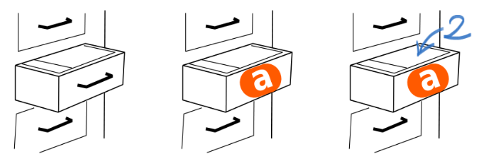

1.1 Variables⚓︎
A. Pourquoi des variables ?⚓︎
A.1 Introduction⚓︎
Considérons la phrase «nous allons stocker le prix du spectacle dans une variable a, qui vaudra donc au départ 32.»
Il y a plusieurs commentaires à faire sur une telle annonce :
- Dans le problème que l'on cherche à modéliser, le prix du spectacle est une donnée importante, qui va peut-être évoluer (ou pas !).
- Pour la manipuler plus simplement, on va la désigner par un nom, le nom de la variable (ici, le nom
aest particulièrement mal choisi, voir D. Bonnes pratiques de nommage) - Comme en mathématiques, le nom de cette variable va désigner une valeur qui peut changer (varier) au cours du temps (encore une fois : ou pas).
- Cette valeur est fixée au départ à 32. On dira en informatique qu'elle est initialisée à 32.
- Si cette valeur ne change pas, on dira qu'elle est constante. Cela peut paraître inutile de donner un nom à quelque chose qui ne change pas, mais cela est très utile de définir les constantes au début d'un programme.
A.2 On code !⚓︎
La phrase précédente donnera donc lieu à la ligne Python suivante :
>>> a = 32
Attention
Le symbole = ici utilisé n'a rien à voir avec le symbole = utilisé en mathématique. On dit qu'on a affecté à a la valeur 32, et il faut se représenter mentalement cette action par l'écriture a ← 32.
Comparaison de la syntaxe dans différents langages
a = 32
int a = 32;
$a = 32;
int a = 32;
var a = 32;
let a = 32;
a := 32
Une fois la valeur 32 stockée dans la variable a, on peut alors utiliser cette variable :
>>> a
32
>>> a + 5
37
>>> b
Traceback (most recent call last):
File "<pyshell>", line 1, in <module>
NameError: name 'b' is not defined
Remarquez bien l'erreur lorsqu'on a fait appel à une variable b qui n'avait jamais été définie, comme le dit explicitement le message NameError: name 'b' is not defined
B. Le fonctionnement interne⚓︎
B.1 Explication simplifiée⚓︎
En première intention, il est possible d'expliquer le fonctionnement interne de l'affectation des variables par la métaphore des tiroirs :
Écrire l'instruction :
>>> a = 2
va provoquer chez l'ordinateur le comportement suivant :
- Est-ce que je possède déjà un tiroir appelé
a?- si oui, je me positionne devant.
- si non, je crée un tiroir appelé
a. - J'ouvre le tiroir et j'y dépose la valeur numérique 2. Si le tiroir contenait déjà une valeur, celle-ci disparaît (on dit qu'elle est écrasée).

Cette explication est suffisante pour aborder la notion de variable : c'est un mot (ou une lettre) qui va désigner une valeur.
Partie difficile (optionnelle)
La métaphore du tiroir est malheureusement un peu trop simplificatrice.
B.2 Une réalité bien plus complexe...⚓︎
B.2.1 La commande id() : l'adresse du tiroir ?⚓︎
Python possède une fonction qui renvoie l'adresse mémoire de la variable donnée en argument.
>>> b = 7
>>> id(b)
9788800
Faites le test avec votre propre IDE Python (vous n'obtiendrez pas forcément la même valeur d'adresse mémoire)
B.2.2 Cela se complique.⚓︎
Sans refermer notre IDE, écrasons la valeur de b avec une nouvelle valeur :
>>> b = 12
b :
>>> id(b)
9788960
Très mauvaise nouvelle : l'adresse de la variable b a changé. Ceci invalide notre métaphore du «tiroir», une place unique qui serait réservée pour y stocker les valeurs successives d'une variable.
La modification de la valeur de b ne s'est pas faite «en place», la variable b s'est déplacée : que s'est-il donc passé ?
B.2.3 Tentative d'explication⚓︎
L'affectation
>>> b = 9
b, mais la création d'un lien vers un espace-mémoire qui contient la valeur 9. Ce lien consiste en l'adresse-mémoire de cette valeur 9.
Cette adresse-mémoire vaut (sur ma configuration personnelle) 9788864.
>>> id(b)
9788864
Comme le présente le ruban ci-dessus, Python pré-positionne les entiers (de -5 à 256) sur des petites adresses-mémoires, car il considère que ces entiers servent souvent, et doivent donc être rapidement accessibles.
Si on créé une nouvelle variable tokyo aussi égale à 9, elle va aussi pointer vers la même adresse-mémoire :
>>> tokyo = 9
>>> id(tokyo)
9788864
tokyo et b renvoient vers la même adresse-mémoire.
Affectons maintenant à tokyo la valeur 2020 et observons son adresse-mémoire :
>>> tokyo = 2020
>>> id(tokyo)
139762979309936
L'adresse-mémoire est (bien) plus grande : elle a été choisie sur le moment par Python pour y stocker 2020 (car 2020 > 256).
De manière plus surprenante, si on créé une nouvelle variable jo qui vaut aussi 2020, Python va ouvrir une autre adresse-mémoire pour y stocker 2020, alors qu'il l'a déjà stockée ailleurs :
>>> jo = 2020
>>> id(jo)
139762979310064
En résumé, une variable n'est pas le nom d'un tiroir mais plutôt le nom d'une flèche qui pointe vers un espace-mémoire de l'ordinateur. - La flèche peut pointer vers un nouvel espace-mémoire sans que le nom de la variable change. - Deux variables peuvent pointer vers le même espace-mémoire.
B.3 Une histoire en 2 temps : évaluation, affectation⚓︎
Observons l'instruction
>>> a = 2 + 3
B.3.1 Étape 1 : l'évaluation⚓︎
Python va prendre la partie à droite du signe égal et va l'évaluer, ce qui signifie qu'il va essayer de lui donner une valeur. Dans nos exemples, cette valeur sera numérique, mais elle peut être d'un autre type (voir plus loin)
Ici, Python effectue le calcul 2 + 3 et l'évalue à la valeur 5.
B.3.2 Étape 2 : l'affectation⚓︎
Une fois évaluée l'expression à droite du signe =, il ne reste plus qu'à l'affecter à la variable (déjà existante ou pas) située à gauche du signe =.
Comme expliqué précédemment, un «lien» est fait entre le nom de la variable et l'adresse-mémoire qui contient la valeur évaluée.
a sera donc lié à la valeur 5. Plus simplement, on dira que «a vaut 5»
B.3.2 L'incrémentation d'une variable.⚓︎
«Incrémenter» une variable signifie l'augmenter.
Imaginons une variable appelée compteur. Au démarrage de notre programme, elle est initialisée à la valeur 0.
>>> compteur = 0
Considérons qu'à un moment du programme, cette variable doit être modifiée, par exemple en lui ajoutant 1.
En Python, cela s'écrira :
>>> compteur = compteur + 1
Observée avec des yeux de mathématicien, la précédente instruction est une horreur.

Vue avec des yeux d'informaticien, voilà comment est interprétée la commande
>>> compteur = compteur + 1
- On évalue la partie droite de l'égalité, donc l'expression
compteur + 1. - On va donc chercher le contenu de la variable
compteur. Si celle-ci n'existe pas, un message d'erreur est renvoyé. - On additionne 1 au contenu de la variable
compteur. - On écrase le contenu actuel de la variable
compteuravec la valeur obtenue au 3.
À la fin de ces opérations, la variable compteur a bien augmenté de 1.
Cette procédure d'incrémentation est très très classique, il faut la maîtriser parfaitement !
Syntaxe classique et syntaxe Pythonesque 
L'incrémentation d'une variable compteur s'écrira donc en Python :
>>> compteur = compteur + 1
>>> compteur += 1
Exercice 1
Écrire le code «classique» et le code «Pythonesque» pour l'instruction suivante :
On initialise une variable score à 100 et on l'augmente de 15.
>>> score = 100
>>> score = score + 15
>>> score = 100
>>> score += 15
Exercice 2
Écrire le code «classique» et le code «Pythonesque» pour l'instruction suivante :
On initialise une variable cellule à 1 et on la multiplie par 2.
>>> cellule = 1
>>> cellule = cellule * 2
>>> cellule = 1
>>> cellule *= 2
Exercice 3
Écrire le code «classique» et le code «Pythonesque» pour l'instruction suivante.
On initialise une variable capital à 1000 et on lui enlève 5%.
>>> capital = 1000
>>> capital = capital - capital * 5/100
>>> capital = 1000
>>> capital *= 0.95
B.3.3 L'échange de variables⚓︎
Après l'incrémentation, une autre technique de base reviendra fréquemment dans nos codes : l'échange de variables.
Imaginons les variables suivantes :
>>> a = 3
>>> b = 5
a et de b.
▸ Méthode naïve
>>> a = b
>>> b = a
Que valent a et b maintenant ?
Malheureusement :
>>> a
5
>>> b
5
>
La variable a a été écrasée dès qu'on lui a donné la valeur de la variable b.
Comment la préserver ?
La situation est similaire au problème suivant : comment échanger le contenu de ces deux verres ?

La méthode est évidente : il nous faut un troisième verre.
Nous allons faire de même pour nos variables. Nous allons utiliser une variable temporaire (on parle aussi de variable tampon) pour conserver la mémoire de la valeur de a (par exemple) avant que celle-ci ne se fasse écraser :
>>> a = 3
>>> b = 5
>>> temp = a
>>> a = b
>>> b = temp
Vous pouvez vérifier maintenant que les valeurs de a et de b ont bien été échangées.
Syntaxe classique et syntaxe Pythonesque
L'échange de deux variables a et de b s'écrit donc :
>>> temp = a
>>> a = b
>>> b = temp
>>> a, b = b, a
Exercice 4
Une petite erreur s'est glissée à Poudlard :
>>> maison_Harry = "Serpentard"
>>> maison_Malfoy = "Gryffondor"
>>> t = maison_Harry
>>> maison_Harry = maison_Malfoy
>>> maison_Malfoy = t
>>> maison_Harry, maison_Malfoy = maison_Malfoy, maison_Harry
C. Différents types de variables⚓︎
Pour l'instant, les variables que nous avons manipulées contiennent toutes des nombres entiers.
Sauf les maisons de Poudlard, qui sont des mots chaînes de caractères.
Pour différencier la nature de ce que peut contenir une variable, on parle alors de type de variable.
En voici quelques uns, que nous découvrirons au fil de l'année :
Types de base
Voici les types Python les plus fréquemment utilisés cette année:
| Type Python | Traduction | Exemple |
|---|---|---|
int |
entier | 42 |
float |
flottant (décimal) | 3.1416 |
str |
chaîne de caractères (string) | "NSI" |
bool |
booléen (True ou False) | True |
tuple |
p-uplet | (255, 127, 0) |
list |
liste | [0, 1, 2, 3, 4, 5] |
dict |
dictionnaire | {'Homer':43, 'Marge':41, 'Bart':12, 'Lisa':10, 'Maggie':4} |
function |
fonction | print |
Comment connaître le type d'une variable ?
Il suffit dans la console d'utiliser la fonction type.
>>> a = 1
>>> type(a)
<class 'int'>
C.1 Python et le typage dynamique⚓︎
Jusqu'à présent, nous ne nous sommes pas occupés de préciser à Python le type de notre variable.
a = 3
Mais dans certains langages, c'est obligatoire. En C par exemple, il faut écrire :
int a = 3;
a n'aura pas le droit de contenir autre chose qu'un nombre entier.
Si on écrit ensuite
a = "test";
Le compilateur C renverra une erreur : on ne peut pas stocker une chaîne de caractères dans une variable qu'on a créée comme étant de type entier.
Et en Python ?
>>> a = 3
>>> type(a)
<class 'int'>
>>> a = "test"
>>> type(a)
<class 'str'>
Python a changé tout seul le type de notre variable, sans intervention. On parle de typage dynamique.
D. Bonnes pratiques de nommage⚓︎
D.1 Ce qui est autorisé et ce qui ne l'est pas⚓︎
Pour nommer correctement une variable, il existe des règles à respecter.
Les règles
-
le nom de la variable peut contenir les caractères suivants :
- des lettres non accentuées (attention, minuscule et majuscule sont des caractères différents)
- des chiffres (mais pas comme premier caractère)
- le tiret du bas _ (underscore, tiret du 8)
-
le nom de la variable ne doit pas commencer par un chiffre
- le nom de la variable ne doit pas contenir d'espace
- le nom de la variable ne doit pas être un mot-clé du langage.
Liste des mots-clés réservés par Python
| and | as | assert | break | class | continue | def | del |
| elif | else | except | False | finally | for | from | global |
| if | import | in | is | lambda | None | not | or |
| pass | raise | return | True | try | while | with | yield |
D.2 Du sens, du sens, du sens⚓︎
Hormis pour les indices (de boucles, de tableaux...) un nom de variable (dans un programme destiné à être lu, par vous ou quelqu'un d'autre) doit impérativement avoir du sens :
# PAS BIEN
if d == 1:
cep += vm
# BIEN
if date == 1:
compte_epargne += versement_mensuel
Règle d'or
On ne donne jamais un nom de variable au hasard, on le choisit pour qu'il soit explicite.

Oui mais pour donner du sens, il faut souvent plusieurs mots...
La longueur du nom de la variable («c'est trop long à taper») n'est plus un problème depuis que la grande majorité des IDE propose la complétion automatique.
Mais comment former ces longs mots ?
D.3 Syntaxe des noms à rallonge⚓︎
Comment accoler des mots
- S'il est composé, le nom peut être de la forme:
snake_case: les mots sont séparés par des underscores. Conseillé en Python.camelCase: les mots sont séparés par des majuscules mais la 1ère lettre est minuscule. Conseillé en Javascript.PascalCase: les mots sont séparés par des majuscules et la 1ère lettre est majuscule. Conseillé en C.kebab-case: les mots sont séparés par des tirets courts. Conseillé en HTML - CSS.
Sans surprise, en Python, nous utiliserons donc le snake_case.